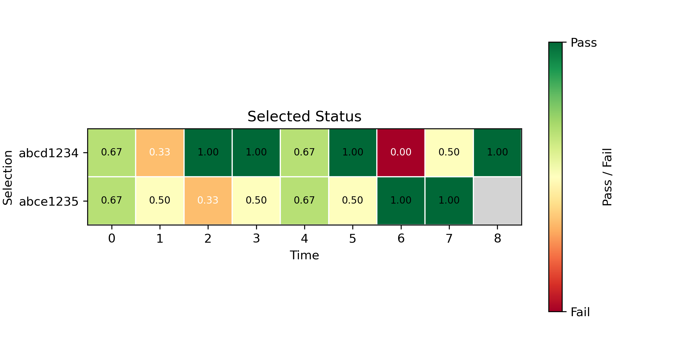
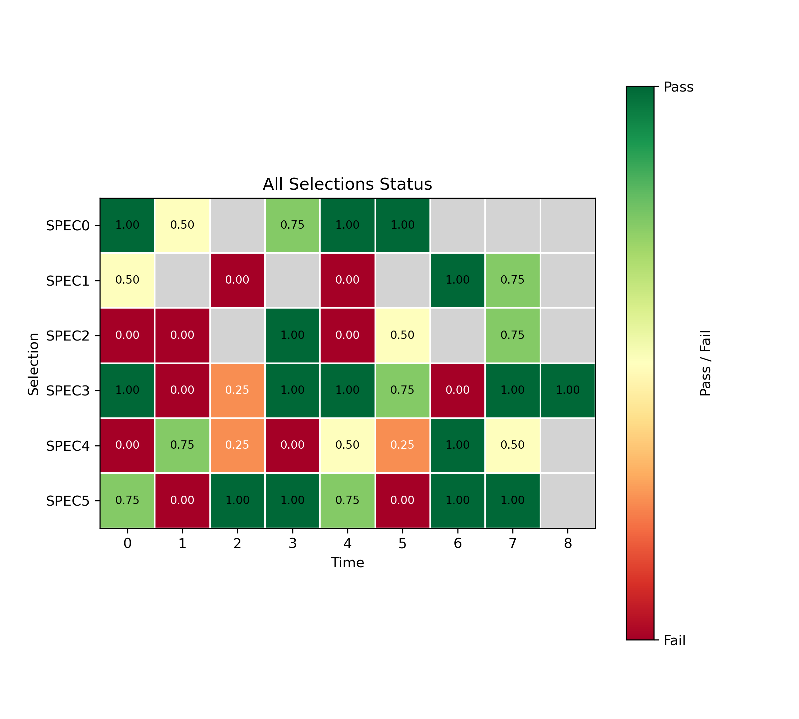

{{DATE}}
{{SUMMARY}}
Analysis was conducted on {{num_mc_iter}} mission timelines using a {{stop_rule}}-run stopping rule.
The analysis evaluates the timeline from {{timeline_filename}}.
There are {{events_per_timeline}} events per timeline instance.
{{failed_task_num}} tasks failed at some point during the Monte Carlo Trial.
The most frequently failed task was Task {{most_failed_task}}.
Timeline Name: {{timeline_name}}
Timeline Identifier: {{timeline_id}}
Filename & Location: {{filename_ext_and_path}}
Start of Timeline: {{t_start}}
End of Timeline:
Timeline Minimum Duration: {{min_duration}}
Timeline Maximum Duration: {{max_duration}}
Configuration Parameters:
| Total Contracts Evaluated | {{total_contracts}} |
| Contracts Passed | {{contracts_passed}} |
| Contracts Failed | {{contracts_failed}} |
| Pass Percentage | {{pass_percent}} |
| Fail Percentage | {{fail_percent}} |
| Task Name | UUID | Failures | Total Evaluations | Failure percent | Confidence interval LB | Confidence interval UB |
|---|---|---|---|---|---|---|
| {{ task.name }} | {{ task.uuid }} | {{ task.failures }} | {{ task.total_evaluations }} | {{ task.failure_percent }} | {{ task.confidence_lower }} | {{ task.confidence_upper }} |
| Contract Name | Metadata Type | Failures | Total Evaluations | Failure percent | Confidence interval LB | Confidence interval UB |
|---|---|---|---|---|---|---|
| {{ contract.name }} | {{ contract.uuid }} | {{ contract.failures }} | {{ contract.total_evaluations }} | {{ contract.failure_percent }} | {{ contract.confidence_lower }} | {{ contract.confidence_upper }} |
| Number of Iterations | {{num_mc_iter}} |
| Stopping Rule | {{stop_rule}} |
| Number of Contracts | {{total_contracts}} |
| Evaluations per Iteration | {{eval_per_iter}} |
| Total Evaluations | {{total_evals}} |
| Passed Evaluations | {{passed_evals}} |
| Failed Evaluations | {{failed_evals}} |
| Passed % | {{passed_percent_evals}} |
| Failed % | {{failed_percent_evals}} |
| Confidence Interval Bound | {{conf_interval}} |


Criteria:
{{CRITERIA}}
Assessment Summary:
Risk Evaluation:
{{RISK_EVAL}}
Overall Veridict:
{{VERDICT}}
Recommendation:
{{RECOMMENDATION}}